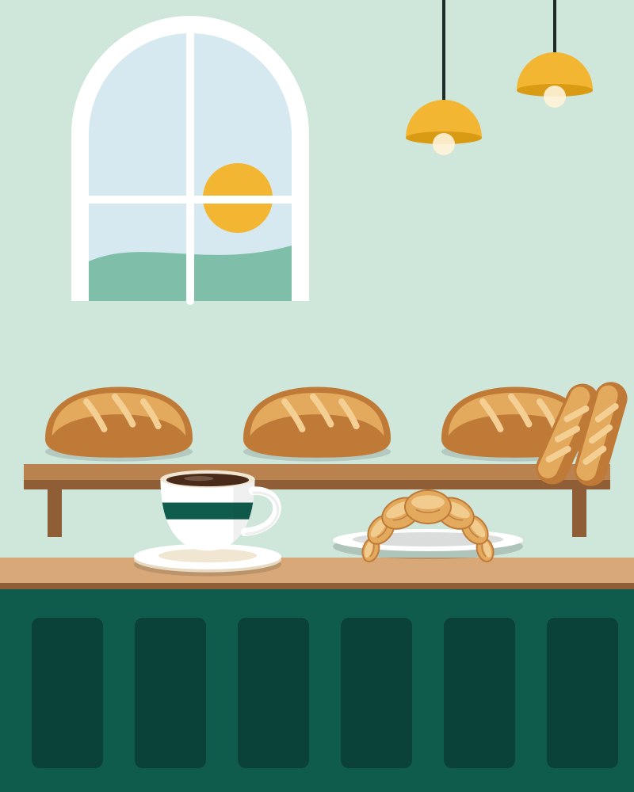

KEPYKLĖLĖ IR KAVINĖ VILNIUJE
Pradėkite rytą su šviežia duona ir gera kava
Kepame kasdien nuo 6 valandos ryto, kavą skrudiname patys, o pusryčius patiekiame iki pat pietų.

Šviežia duona kasdien nuo 06:00
KEPYKLĖLĖ IR KAVINĖ VILNIUJE
Kepame kasdien nuo 6 valandos ryto, kavą skrudiname patys, o pusryčius patiekiame iki pat pietų.
Šviežia duona kasdien nuo 06:00
Rytmetys“ gimė 2016 metais kaip maža šeimos kepyklėlė Vilniaus senamiestyje. Šiandien čia kepame raugintą duoną, sviestinius kepinius ir desertus, o šalia jų patiekiame kavą iš vietinės skrudyklos.
Naudojame sezonines vietines žaliavas, o neparduotus kepinius vakare dovanojame vietos bendruomenei.
